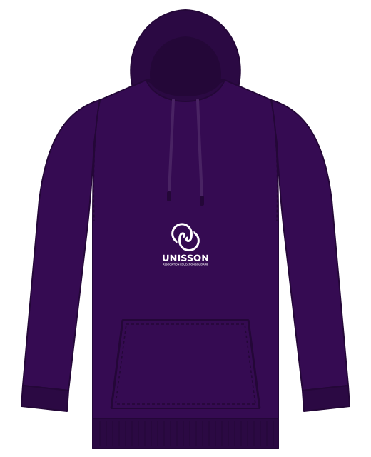
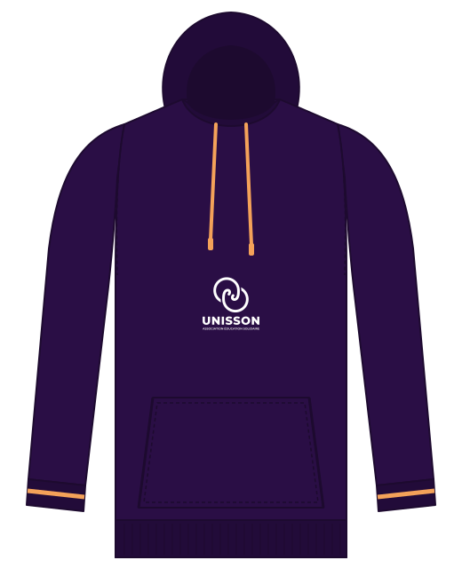

Palette UNISSON : actuelle ou proposée
Mêmes composants, mêmes textes : seule la palette change. À gauche, les couleurs réellement utilisées aujourd'hui par le site et le print. À droite, la proposition : une seule gamme de violets et un abricot chaleureux réservé aux actions (don, adhésion).
Actuelle
5 violets + rose-rougePalette
Profond
#350b52Moyen
#6d28d9Clair
#8b5cf6Lilas
#a855f7Lilas sombre
#c084fcDon / urgence
#e11d48Site — accueil
UNISSONASSOCIATION ÉDUCATION SOLIDAIRE
ASSOCIATION LOI 1901
Agir à l'unisson pour les familles et la jeunesse vulnérable.
Jeune association de Gennevilliers, UNISSON se mobilise d'abord pour le premier secours social.
Faire un donNos projets
Lisibilité (WCAG, minimum 4,5 : 1 pour le texte courant)
| Lien lilas | texte lilas sur blanc | 4,0 : 1 ✕ |
| Violet clair | texte violet clair sur blanc | 4,2 : 1 ✕ |
| Faire un don | blanc sur rose-rouge | 4,7 : 1 ✓ |
| Accent | lilas sur violet profond | 6,0 : 1 ✓ |
Carte de visite
UNISSONASSOCIATION ÉDUCATION SOLIDAIRE
Sabri TOUJANI
PRÉSIDENT
contact@education-solidaire.org
45, rue Henri Barbusse · 92230 Gennevilliers
45, rue Henri Barbusse · 92230 Gennevilliers
Hoodie bénévole

Proposée
2 violets + abricotPalette
Encre
#2A0E45Violet
#6D28D9Lavande
#EDE4FBAbricot
#F4A259Urgence
#D92D20Épicerie
#059669Site — accueil
UNISSONASSOCIATION ÉDUCATION SOLIDAIRE
ASSOCIATION LOI 1901
Agir à l'unisson pour les familles et la jeunesse vulnérable.
Jeune association de Gennevilliers, UNISSON se mobilise d'abord pour le premier secours social.
Faire un donNos projets
Lisibilité (WCAG, minimum 4,5 : 1 pour le texte courant)
| Lien violet | texte violet sur blanc | 7,1 : 1 ✓ |
| En projet | violet sur lavande | 5,8 : 1 ✓ |
| Faire un don | encre sur abricot | 8,1 : 1 ✓ |
| Accent | abricot sur encre | 8,1 : 1 ✓ |
Carte de visite
UNISSONASSOCIATION ÉDUCATION SOLIDAIRE
Sabri TOUJANI
PRÉSIDENT
contact@education-solidaire.org
45, rue Henri Barbusse · 92230 Gennevilliers
45, rue Henri Barbusse · 92230 Gennevilliers
Hoodie bénévole

Ce que change la proposition
- Le don ne se confond plus avec l'urgence : aujourd'hui « Faire un don » et « En cas d'urgence » partagent le même rose-rouge. L'abricot distingue l'action « je soutiens » de l'alerte « je suis en danger ».
- Tous les textes sont lisibles (≥ 4,5 : 1), y compris les liens et les badges, ce qui compte pour un public malvoyant ou peu à l'aise avec la lecture.
- Un seul violet partout : site, print et textile utilisent les mêmes deux teintes, déjà présentes dans le logo.
- Règle d'usage de l'abricot : en fond ou en accent sur foncé, jamais en texte sur blanc (2,1 : 1).